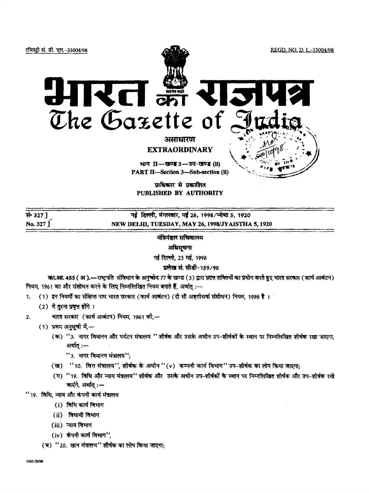
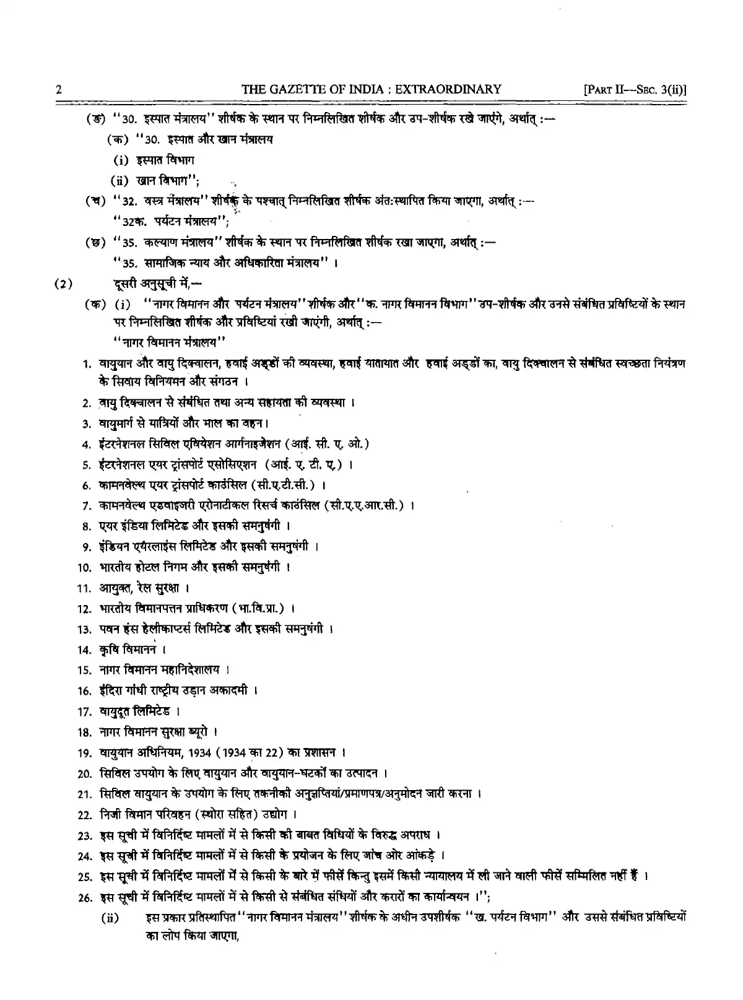
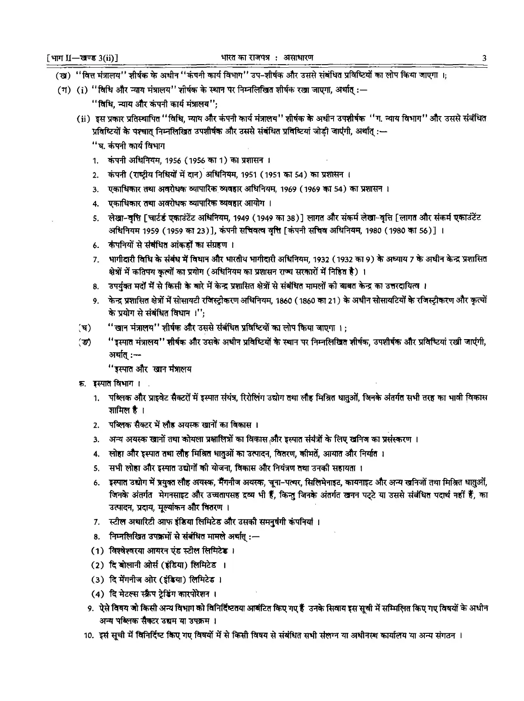
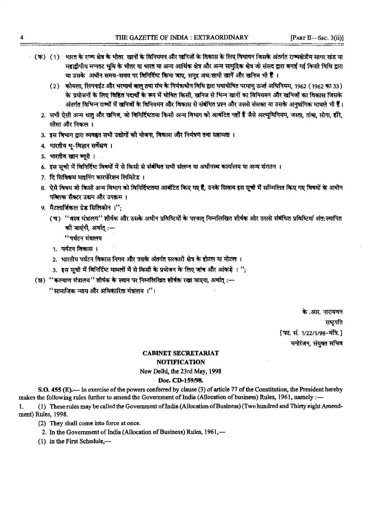
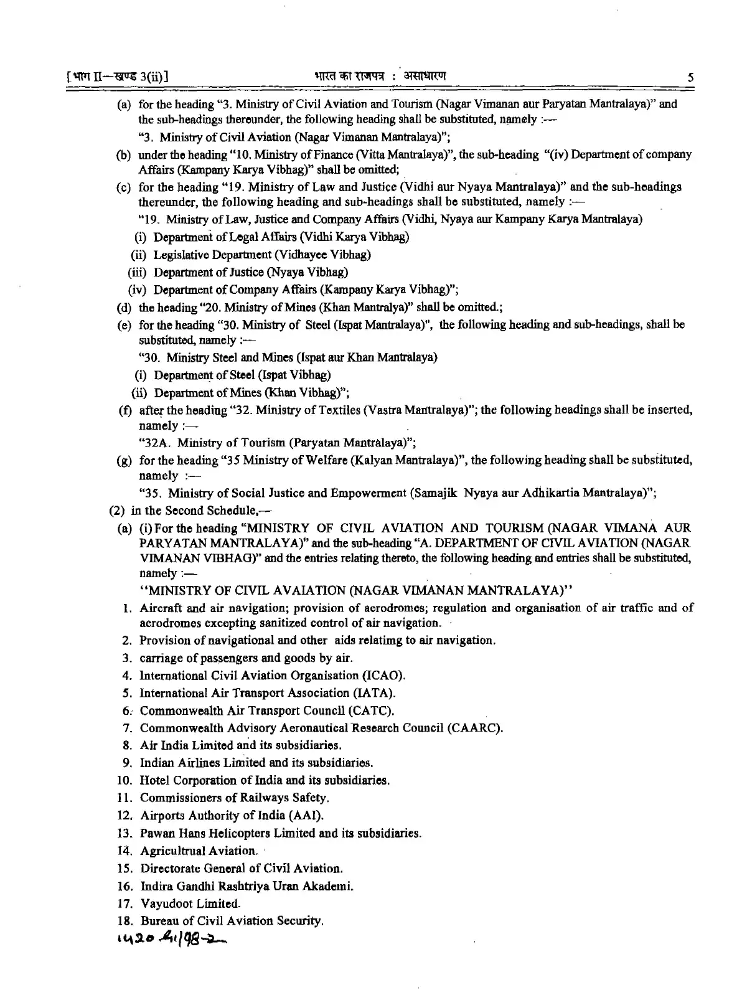
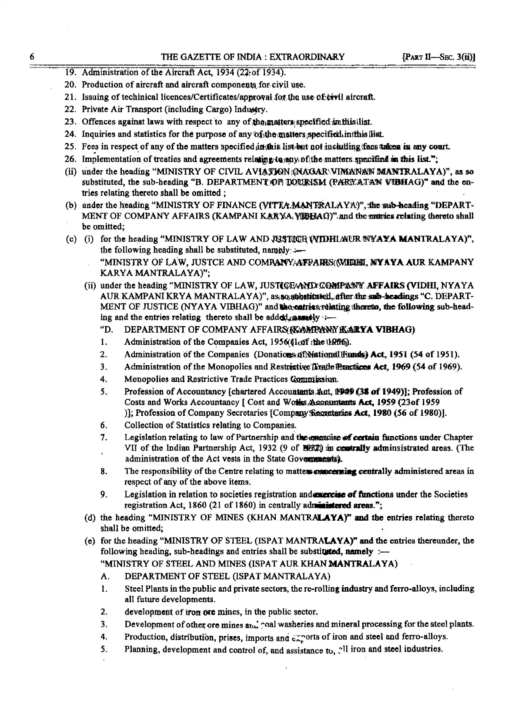
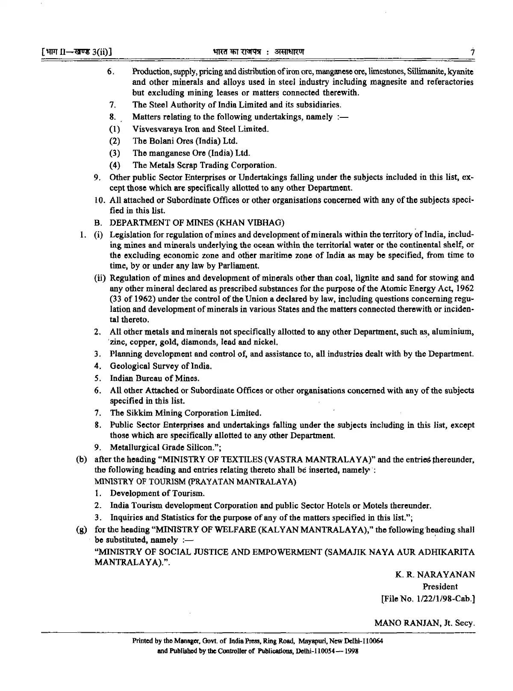

Amendment #238 (S.O. 455(E), 1998)
16 changes: 7 to the First Schedule, 9 to the Second Schedule. 16 applied
What it did to the ministries
- mergedMinistry of Steel and Ministry of Mines merge into Ministry of Steel and Mines change 4, 5, 13, 14 · histories: Steel, Mines, Steel and Mines
- renamedMinistry of Civil Aviation and Tourism is renamed Ministry of Civil Aviation change 1, 8, 9 · histories: Civil Aviation
- renamedMinistry of Law and Justice is renamed Ministry of Law, Justice and Company Affairs change 3, 11, 12 · histories: Law and Justice
- renamedMinistry of Welfare is renamed Ministry of Social Justice and Empowerment change 7, 16 · histories: Social Justice
- grewMinistry of Law, Justice and Company Affairs grows from 45 to 54 subjects change 3, 11, 12 · histories: Law and Justice
The order, page by page
Page 1 of 8

Page 2 of 8

Page 3 of 8

Page 4 of 8

Page 5 of 8

12345678Schedule 1 › Ministry of Civil Aviation and Tourism
- 3. Ministry of Civil Aviation
applied at schedule 1 › ministry 3 in the Rules after #238
Schedule 1 › Ministry of Finance › Department of company Affairs
applied at schedule 1 › ministry 11 › department iv in the Rules after #238
Schedule 1 › Ministry of Law and Justice
- 19. Ministry of Law, Justice and Company Affairs
- i. Department of Legal Affairs
- ii. Legislative Department (Vidhayee Vibhag)
- iii. Department of Justice
- iv. Department of Company Affairs
applied at schedule 1 › ministry 20 in the Rules after #238
Schedule 1 › Ministry of Mines
applied at schedule 1 › ministry 21 in the Rules after #238
Schedule 1 › Ministry of Steel
- 30. Ministry of Steel and Mines
- i. Department of Steel
- ii. Department of Mines
applied at schedule 1 › ministry 30 in the Rules after #238
after Schedule 1 › Ministry of Textiles
- 32A. Ministry of Tourism
applied at schedule 1 › ministry 32A in the Rules after #238
Schedule 1 › Ministry of Welfare
- 35. Ministry of Social Justice and Empowerment
applied at schedule 1 › ministry 35 in the Rules after #238
new hindi differs
Schedule 2 › MINISTRY OF CIVIL AVIATION AND TOURISM › DEPARTMENT OF CIVIL AVIATION
- MINISTRY OF CIVIL AVAIATION
- 1. Aircraft and air navigation; provision of aerodromes; regulation and organisation of air traffic and of aerodromes excepting sanitized control of air navigation.
- 2. Provision of navigational and other aids relating to air navigation.
- 3. carriage of passengers and goods by air.
- 4. International Civil Aviation Organisation (ICAO).
- 5. International Air Transport Association (IATA).
and 21 more
- 6. Commonwealth Air Transport Council (CATC).
- 7. Commonwealth Advisory Aeronautical Research Council (CAARC).
- 8. Air India Limited and its subsidiaries.
- 9. Indian Airlines Limited and its subsidiaries.
- 10. Hotel Corporation of India and its subsidiaries.
- 11. Commissioners of Railways Safety.
- 12. Airports Authority of India (AAI).
- 13. Pawan Hans Helicopters Limited and its subsidiaries.
- 14. Agricultrual Aviation.
- 15. Directorate General of Civil Aviation.
- 16. Indira Gandhi Rashtriya Uran Akademi.
- 17. Vayudoot Limited.
- 18. Bureau of Civil Aviation Security. 1420-41/98-2
- 19. Administration of the Aircraft Act, 1934 (22 of 1934).
- 20. Production of aircraft and aircraft components for civil use.
- 21. Issuing of techinical licences/Certificates/approval for the use of civil aircraft.
- 22. Private Air Transport (including Cargo) Industry.
- 23. Offences against laws with respect to any of the matters specified in this ¡list.
- 24. Inquiries and statistics for the purpose of any of the matters specified in this ſlist.
- 25. Fees in respect of any of the matters specified in this list but not inclubling (foes (taken in any court.
- 26. Implementation of treaties and agreements relating to any of the matters specified in this list.
applied at schedule 2 › ministry MINISTRY OF CIVIL AVAIATION in the Rules after #238
read page break, states inferred one heading
Page 6 of 8

91011121314Schedule 2 › MINISTRY OF CIVIL AVIATION › DEPARTMENT OF TOURISM
applied at schedule 2 › ministry MINISTRY OF CIVIL AVAIATION › department B in the Rules after #238
states inferred loose
Schedule 2 › MINISTRY OF FINANCE › DEPARTMENT OF COMPANY AFFAIRS
applied at schedule 2 › ministry MINISTRY OF FINANCE › department D in the Rules after #238
Schedule 2 › MINISTRY OF LAW AND JUSTICE
- MINISTRY OF LAW, JUSTCE AND COMPANY AFFAIRS(
applied at schedule 2 › ministry MINISTRY OF LAW, JUSTCE AND COMPANY AFFAIRS( in the Rules after #238
after Schedule 2 › MINISTRY OF LAW, JUSTICE AND COMPANY AFFAIRS › DEPARTMENT OF JUSTICE
- MINISTRY OF LAW, JUSTICE AND COMPANY AFFAIRS (VIDHI, NYAYA AUR KAMPANI KRYA MANTRALAYA)", as sqaubstituted, after the sub-headings "C. DEPART- MENT OF JUSTICE (NYAYA VIBHAG)" and the entries relating thereto, the following sub-heading and the entries relating thereto shall be addedly
- D. DEPARTMENT OF COMPANY AFFAIRS(
- 1. Administration of the Companies Act, 1956((loof (the 1956).
- 2. Administration of the Companies (Donations of National Funds) Act, 1951 (54 of 1951).
- 3. Administration of the Monopolies and Restrictive Trade Menotices Act, 1969 (54 of 1969).
- 4. Monopolies and Restrictive Trade Practices Commission.
and 5 more
- 5. Profession of Accountancy [chartered Accountants Act, 1949 (38 of 1949)]; Profession of Costs and Works Accountancy [Cost and Worksuntants Act, 1959 (23 of 1959 )]; Profession of Company Secretaries [Company Secretaries Act, 1980 (56 of 1980)].
- 6. Collection of Statistics relating to Companies.
- 7. Legislation relating to law of Partnership and the emencise of certain functions under Chapter VII of the Indian Partnership Act, 1932 (9 of 1982) in cesatrally adminsistrated areas. (The administration of the Act vests in the State Govenmments).
- 8. The responsibility of the Centre relating to matters commoerning centrally administered areas in respect of any of the above items.
- 9. Legislation in relation to societies registration and exercise of functions under the Societies registration Act, 1860 (21 of 1860) in centrally administered areas.
applied at schedule 2 › ministry MINISTRY OF LAW, JUSTCE AND COMPANY AFFAIRS( › department D in the Rules after #238
states inferred loose
Schedule 2 › MINISTRY OF MINES
applied at schedule 2 › ministry in the Rules after #238
Schedule 2 › MINISTRY OF STEEL
- MINISTRY OF STEEL AND MINES
- A. DEPARTMENT OF STEEL
- 1. Steel Plants in the public and private sectors, the re-rolling industry and ferro-alloys, including all future developments.
- 2. development of iron ore mines, in the public sector.
- 3. Development of other ore mines and roal washeries and mineral processing for the steel plants.
- 4. Production, distribution, prises, imports and exports of iron and steel and ferro-alloys.
and 18 more
- 5. Planning, development and control of, and assistance to, all iron and steel industries.
- 6. Production, supply, pricing and distribution of iron ore, manganese ore, limestones, Sillimanite, kyanite and other minerals and alloys used in steel industry including magnesite and referactories but excluding mining leases or matters connected therewith.
- 7. The Steel Authority of India Limited and its subsidiaries.
- 8. Matters relating to the following undertakings, namely — (1) Visvesvaraya Iron and Steel Limited. (2) The Bolani Ores (India) Ltd. (3) The manganese Ore (India) Ltd. (4) The Metals Scrap Trading Corporation.
- 9. Other public Sector Enterprises or Undertakings falling under the subjects included in this list, except those which are specifically allotted to any other Department.
- 10. All attached or Subordinate Offices or other organisations concerned with any of the subjects specified in this list.
- B. DEPARTMENT OF MINES
- 1.
- i. Legislation for regulation of mines and development of minerals within the territory of India, including mines and minerals underlying the ocean within the territorial water or the continental shelf, or the excluding economic zone and other maritime zone of India as may be specified, from time to…
- ii. Regulation of mines and development of minerals other than coal, lignite and sand for stowing and any other mineral declared as prescribed substances for the purpose of the Atomic Energy Act, 1962 (33 of 1962) under the control of the Union a declared by law, including questions concerning…
- 2. All other metals and minerals not specifically allotted to any other Department, such as, aluminium zinc, copper, gold, diamonds, lead and nickel.
- 3. Planning development and control of, and assistance to, all industries dealt with by the Department.
- 4. Geological Survey of India.
- 5. Indian Bureau of Mines.
- 6. All other Attached or Subordinate Offices or other organisations concerned with any of the subjects specified in this list.
- 7. The Sikkim Mining Corporation Limited.
- 8. Public Sector Enterprises and undertakings falling under the subjects including in this list, except those which are specifically allotted to any other Department.
- 9. Metallurgical Grade Sillcon.
applied at schedule 2 › ministry MINISTRY OF STEEL (ISPAT MANTRA- LAYA) in the Rules after #238
read page break
Page 7 of 8

1516after Schedule 2 › MINISTRY OF TEXTILES
- MINISTRY OF TOURISM
- 1. Development of Tourism.
- 2. India Tourism development Corporation and public Sector Hotels or Motels thereunder.
- 3. Inquiries and Statistics for the purpose of any of the matters specified in this list.
applied at schedule 2 › ministry MINISTRY OF TOURISM in the Rules after #238
states inferred put again
Schedule 2 › MINISTRY OF WELFARE
- MINISTRY OF SOCIAL JUSTICE AND EMPOWERMENT
applied at schedule 2 › ministry MINISTRY OF SOCIAL JUSTICE AND EMPOWERMENT in the Rules after #238
Page 8 of 8
How this document was read
Edits to the reading
| Date | By | Edit | Before → after |
|---|---|---|---|
| 12 November 2026 | claude | word added |
Changes placed by an inference rule
| Change | Rule | Status | What |
|---|---|---|---|
| 8 | one_heading | accepted | change 8: the heading Ministry of Civil Aviation and Tourism (Nagar Vimanan Aur Paryatan Mantralaya) and its sub-heading Department of Civil Aviation put as one heading, MINISTRY OF CIVIL AVAIATION |
| 9 | loose | accepted | change 9: ministry MINISTRY OF CIVIL AVIATION taken for ministry MINISTRY OF CIVIL AVAIATION, named loosely |
| 12 | loose | accepted | change 12: ministry MINISTRY OF LAW, JUSTICE AND COMPANY AFFAIRS taken for ministry MINISTRY OF LAW, JUSTCE AND COMPANY AFFAIRS(, named loosely |
| 15 | put_again | unreviewed | change 15: MINISTRY OF TOURISM put in again; the one there before omitted, a schedule holding one unit by a name |
From the Government of India (Allocation of Business) Rules, 1961 and their amendments, as published by the Cabinet Secretariat (cabsec.gov.in), read by orgpedia. The readings of the older scanned gazettes have known gaps.